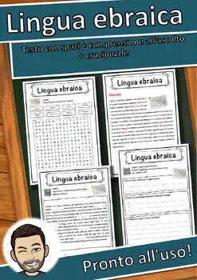
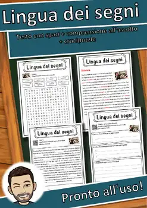
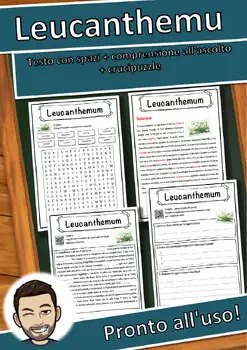

New resources
My newest resources appear here first. The list updates automatically.
48 resources

Linguaggio – Italian Reading Comprehension Worksheet (Scheda): Cloze & Listening

Lingua yiddish – Italian Reading Comprehension Worksheet (Scheda didattica)
Lingua ungherese – Italian Reading Comprehension Worksheet (Scheda didattica)
Lingua ucraina – Italian Reading Comprehension Worksheet (Scheda didattica)
Lingua tedesca – Italian Reading Comprehension Worksheet (Scheda didattica)
Lingua spagnola – Italian Reading Comprehension Worksheet (Scheda didattica)

Modern Art Movements BUNDLE | Art History Fact Sheets with Answer Keys
Lingua slovena – Italian Reading Comprehension Worksheet (Scheda didattica)
Lingua serba – Italian Reading Comprehension Worksheet (Scheda didattica)
Lingua russa – Italian Reading Comprehension Worksheet (Scheda didattica)

Lingua portoghese – Italian Reading Comprehension Worksheet (Scheda didattica)
Lingua polacca – Italian Reading Comprehension Worksheet (Scheda didattica)
Lingua olandese – Italian Reading Comprehension Worksheet (Scheda didattica)
Lingua materna – Italian Reading Comprehension Worksheet (Scheda didattica)

19th-Century Art Movements BUNDLE | Art History Fact Sheets with Answer Keys
Crittografia – Italian Reading Comprehension Worksheet (Scheda didattica)

Romanesque to Biedermeier Art BUNDLE | Art History Fact Sheets with Answer Keys
Lingua latina – Italian Reading Comprehension Worksheet (Scheda didattica)
Lingua italiana – Italian Reading Comprehension Worksheet (Scheda didattica)
Lingua hindī – Italian Reading Comprehension Worksheet (Scheda didattica)

Histoire de France – French Reading BUNDLE | Gaul to Versailles Fiches
Lingua greca – Italian Reading Comprehension Worksheet (Scheda didattica)

Lingua francese – Italian Reading Comprehension Worksheet (Scheda didattica)

Human Body Reading Comprehension BUNDLE | Brain, Heart, Skeleton & More

Lingua ebraica – Italian Reading Comprehension Worksheet (Scheda didattica)

Black History Month Reading Comprehension FREE Sampler | Cloze & Word Search

Lingua dei segni – Italian Reading Comprehension Worksheet (Scheda didattica)
Lingua danese – Italian Reading Comprehension Worksheet (Scheda didattica)

Gli animali – Italian Reading Comprehension BUNDLE | Animal Schede
Lingua curda – Italian Reading Comprehension Worksheet (Scheda didattica)
Lingua croata – Italian Reading Comprehension Worksheet (Scheda didattica)

Antica Roma – Italian Reading Comprehension BUNDLE | Ancient Rome Schede

Lingua cinese standard – Italian Reading Comprehension Worksheet
Lingua bengali – Italian Reading Comprehension Worksheet (Scheda didattica)

Les animaux – French Reading Comprehension BUNDLE | Animal Fiches
Lingua araba – Italian Reading Comprehension Worksheet (Scheda didattica)

Lichene – Italian Reading Comprehension Worksheet (Scheda): Cloze & Listening

L'espace – French Reading Comprehension BUNDLE | Space & Astronomy Fiches

Licantropo – Italian Reading Comprehension Worksheet (Scheda): Cloze & Listening

Libro – Italian Reading Comprehension Worksheet (Scheda): Cloze & Listening

Libia – Italian Reading Comprehension Worksheet (Scheda): Cloze & Listening

La francophonie – French Reading BUNDLE | French-Speaking World Fiches
Libertà di parola – Italian Reading Comprehension Worksheet (Scheda didattica)

Libertà – Italian Reading Comprehension Worksheet (Scheda): Cloze & Listening
Liberalismo – Italian Reading Comprehension Worksheet (Scheda didattica)
Libera Chiesa – Italian Reading Comprehension Worksheet (Scheda didattica)

Libano – Italian Reading Comprehension Worksheet (Scheda): Cloze & Listening

Leucanthemum – Italian Reading Comprehension Worksheet (Scheda didattica)
No resources found – try a different search term or filter.